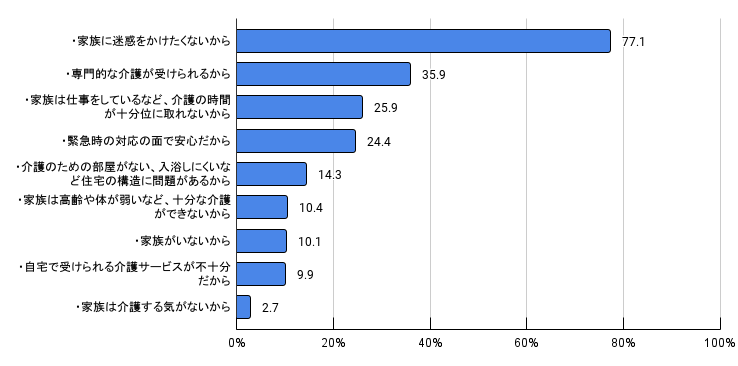
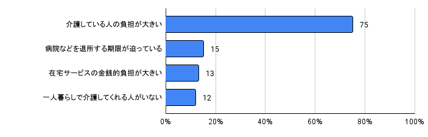

施設入所を希望する理由
- 施設入所を希望する理由として、家族の負担が大きいことを挙げる人が多い。
- また、「専門的な介護を受けられる」「緊急時の対応の面で安心」といった、 施設サービスのメリットも理由として挙げられる。
- その他、「在宅サービスの金銭的負担が大きい」「自宅で受けられる介護サービスが不十分」「住宅の構造に問題がある」といった、在宅介護を十分に受けられない事情も理由として挙げられる。
１「高齢者介護に関する世論調査」（内閣府・平成15年7月）
介護施設等を利用したい理由

(n=1511)
２「介護保険の利用実態等に関する調査報告書」（埼玉県・平成14年3月）
施設にできればすぐにでも入りたいという理由（複数回答）(n=254)

(n=254)
＊居宅サービス利用者4302人に対し施設入所に対する考え方を調査し、そのうち「できればすぐにでも入りたい」と回答した254人に対して、その理由を調査したもの。